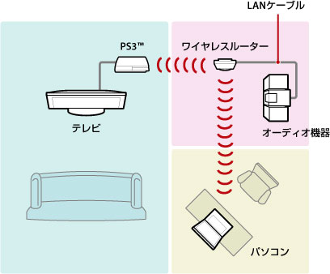
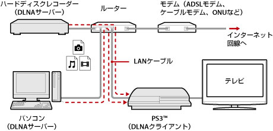
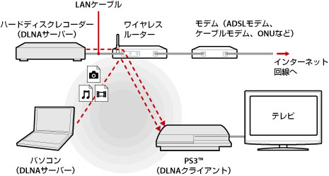
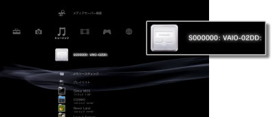
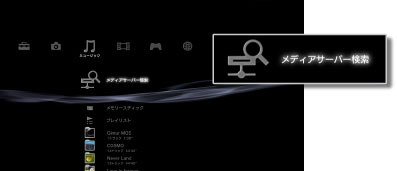

メディアサーバー接続
DLNAに対応した機器への接続に関する設定をします。
| 有効にする | DLNAに対応した機器への接続を有効にする |
|---|---|
| 無効にする | DLNAに対応した機器への接続を無効にする |
DLNAについて
DLNA（Digital Living Network Alliance）とは、パソコンやハードディスクレコーダー、テレビなどのデジタル機器をネットワークでつないで、互いに別の機器にあるデータを利用できる仕組みです。
DLNA対応機器には、画像、音楽、動画ファイルなどのデータを配信する側（サーバー）と、データを受信する側（クライアント）の2種類があります。両方の機能を持つ機器もあります。PS3™をクライアントとして使うことで、DLNAサーバー機能を持つパソコンやハードディスクレコーダーなどに保存してある画像、音楽、動画ファイルなどのデータを、ネットワークを経由してPS3™で再生できます。

PS3™とDLNAサーバーを接続する
有線または無線で、PS3™とDLNAサーバーを接続します。
有線でパソコンと接続する場合の接続例

無線でパソコンと接続する場合の接続例

DLNAサーバーの設定をする
DLNAサーバーをPS3™で利用できるように設定します。DLNAサーバーには次のような機器があります。
- 他社製品を含むDLNAガイドラインに対応した機器
- Windows Media Player 11がインストールされたパソコン
AV機器をDLNAサーバーとして使う場合
接続した機器のDLNAサーバー機能を有効にして、コンテンツを公開します。設定方法は接続した機器によって異なります。詳しくは、接続した機器の取扱説明書をご覧ください。
Microsoft Windows搭載パソコンをDLNAサーバーにする場合
Windows Media Player 11の機能を使うことで、Microsoft Windows搭載パソコンをDLNAサーバーとして利用できます。
1. |
Windows Media Player 11を起動する。 |
|---|---|
2. |
［ライブラリ］メニューから［メディアの共有］を選ぶ。 |
3. |
［メディアを共有する］にチェックする。 |
4. |
［メディアを共有する］チェックボックスの下にあるデバイス一覧からデータを共有したい機器を選び、［許可］を選ぶ。 |
5. |
［OK］を選ぶ。 |
ヒント
- Microsoft Windows XP搭載のパソコンには、Windows Media Player 11が標準インストールされていません。Microsoft社のWebサイトからインストーラをダウンロードし、インストールしてください。
- Windows Media Player 11の使いかたについて詳しくは、Windows Media Player 11のヘルプをご覧ください。
- パソコンによっては、独自のDLNAサーバーソフトウェアがインストールされていることがあります。詳しくは、お使いのパソコンの取扱説明書をご覧ください。
DLNAサーバーのコンテンツを再生する
PS3™の電源を入れると、同じネットワーク内にあるDLNAサーバーが自動的に検索され、 （フォト）／
（フォト）／ （ミュージック）／
（ミュージック）／ （ビデオ）にサーバーのアイコンが表示されます。
（ビデオ）にサーバーのアイコンが表示されます。
1. |
 |
|---|---|
2. |
再生したいファイルを選ぶ。 |
ヒント
- PS3™をネットワークに接続しておく必要があります。ネットワーク設定について詳しくは、
 （設定）＞
（設定）＞ （ネットワーク設定）＞［インターネット接続設定］をご覧ください。
（ネットワーク設定）＞［インターネット接続設定］をご覧ください。 - お使いのネットワークで、IPアドレスの割り当て方法をAutoIPからDHCPに切りかえたときは、
 （メディアサーバー検索）でDLNAサーバーを再検索してください。
（メディアサーバー検索）でDLNAサーバーを再検索してください。 - DLNAサーバーのアイコンは、（設定）＞（ネットワーク設定）＞［メディアサーバー接続］を有効に設定しているときだけ表示されます。
- 表示されるフォルダー名は、DLNAサーバーによって異なります。
- DLNAサーバーの種類によっては、一部のファイルを再生できなかったり、再生中の操作が制限されたりすることがあります。
- 著作権保護されたコンテンツは再生できません。
- DLNAに準拠していないサーバーに保存されているデータは、ファイル名に［＊］が付くことがあります。このようなファイルは、PS3™で再生できない場合があります。また、PS3™で再生できても他の機器では再生できない場合があります。
- CECH-4200シリーズ以降で映像コンテンツを再生する場合、HDMIケーブルでの接続が必要になる場合があります。
手動でDLNAサーバーを検索する
同じネットワーク内にあるDLNAサーバーを再検索できます。PS3™の電源を入れたあとにDLNAサーバーが見つからなかったときに利用します。
（フォト）／（ミュージック）／（ビデオ）のいずれかから（メディアサーバー検索）を選びます。検索結果が表示され、XMB™に戻ると接続できるDLNAサーバーの一覧が表示されます。

ヒント
（メディアサーバー検索）は、（設定）＞（ネットワーク設定）＞［メディアサーバー接続］を有効に設定しているときだけ表示されます。